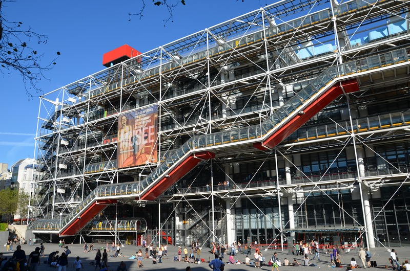
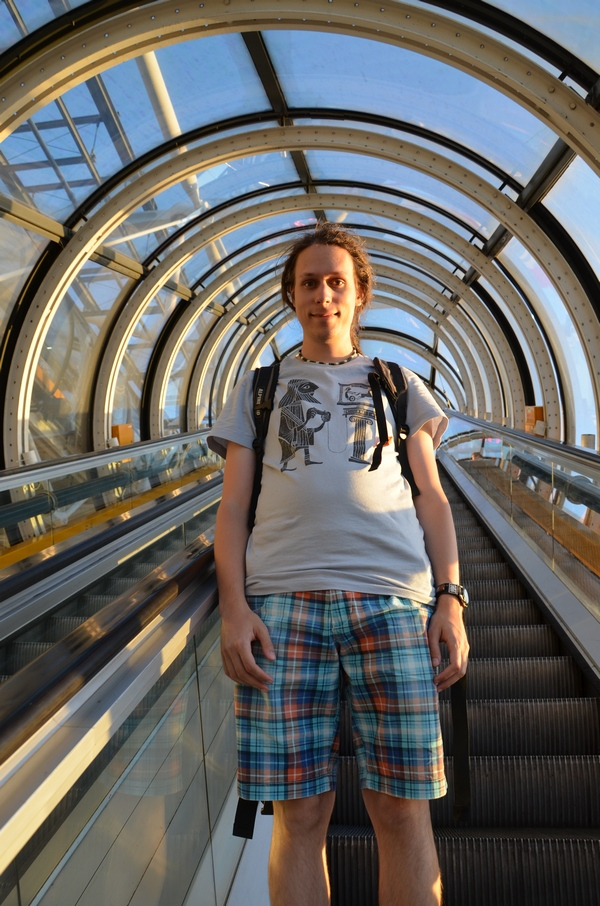

…aneb co už se do minulého článku nevešlo :). Posilněni vynikajícím obědem jsme se pomalu odkulili k naší poslední zastávce - centru moderního umění, nazvaném po někdejším francouzském prezidentovi Georgesi Pompidouovi (taky vám to jméno příjde tak legrační :D?). Tato obrovská budova neukrývá jen muzeum moderního umění, ale také kinosály či knihovnu, a je tak oblíbeným místem především francouzské mládeže. O nevšedním vzhledu celé budovy jste jistě již slyšeli, a tak se nebudu opakovat a přidám pouze několik fotek.

Centre Pompidou

Fascinace prosklenými eskalátory :)
Nás pochopitelně krom budovy jako takové (na projektu se prý podílel i český architekt Jan Kaplický) zajímala především expozice s díly předních umělců 20.století. Ne že bychom byli nějací velcí znalci či milovníci umění, ale expozice je tak velká a pestrá, že musí zaujmout skutečně každého. A navíc se pyšní jmény, která zná i takový barbar, jako jsem třeba já :D…


S focením vevnitř opět nebyl vůbec žádný problém. Naopak se securiťákům tentokrát moc nelíbila velikost našeho batohu a trvali na tom, že ho nesmíme nést na zádech, ale obráceně na břiše. Moc jsme to nepobrali, protože v muzeu jsme viděli spoustu lidí, kteří měli batoh srovnatelné velikosti a nesli ho normálně. Sotva jsme zašli za roh, přendali jsme si batoh zase zpátky na záda a nikdo nic nehrotil 8-)…


Jak jsem již napsala, k vidění je toho skutečně spousta a nedá se to všechno naráz vstřebat a vychutnat. Pokud vás dostihne únava, můžete expozici na chvíli opustit a usadit se na venkovní terase, odkud je krásný výhled na Paříž…


Ještě lepší výhled si užijete, pokud vyjedete po eskalátorech do úplně posledního patra, kde se nachází restaurace a další expozice. Toto místo jsme si nechali na úplný závěr, abychom si odsud mohli vyfotit slunce zapadající nad Paříží :-)…

No a to už byl nejvyšší čas Centrum Pompidou opustit, aby nám nezavřeli Monoprix a my si mohli na večer koupit ještě víno a něco k jídlu. Okolí Pompidou mi popravdě moc k srdci nepřirostlo - strašně to tam všude smrdí a fascinuje mě, jak se na plácku před vstupem do budovy válí mladí Francouzi klidně jen tak na zemi - kolikrát si ani tu deku nebo bundu pod sebe nenastelou. Krom toho se tam po setmění začínají trousit podivná individua. Poté, co nám tam jeden černoch začal nabízet hašiš, jsme se radši rychle dekovali pryč :D…
Doma jsme si ještě užili dobrodružství s lahví vína, která se ne a ne otevřít. Málem jsme na tom zlomili vývrtku. Nakonec jsme se museli k vytouženému vínečku korkem doslova prodlabat a takto znehodnocené ho pak filtrovat přes papírové ubrousky, kterých jsme naštěstí měli dostatečnou zásobu :D. Za popíjení lahodného “destilovaného” vína jsme pak plánovali následující den, který jsme se rozhodli strávit ve Versailles. O tom ale zase někdy příště ;-)…

Komentáře (3)
Komentáře jsou uzavřené.